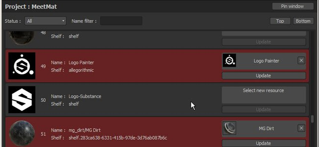
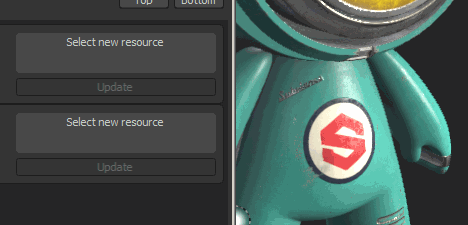
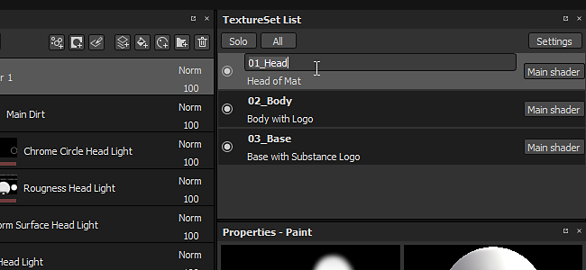
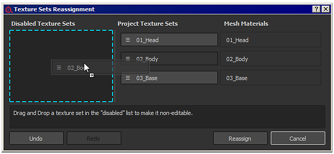

With Substance Painter 2.6 our focus was to provide a way to manage the texture sets directly inside Substance Painter, without the need to make a new project or reimport your mesh with updated material names. We also wanted to provide a way to update resources used in projects, something we saw requested a lot in the past.
Release date : 27 April 2017
This new sample project offer a new shiny and adorable character named "Mat". It contains three texture sets ready to be painted on.
Participate in the Meet Mat contest with it to win some really cool prizes : https://www.allegorithmic.com/contest/meet-mat-2017-substance-3d-painting-contest

The scripting API of Substance Painter has been improved to add new functions that allow to replace resources in project with other versions. To demonstrate this new feature, a new plugin created with the scripting API has been added and allow to browse all the resources contained in a given project. Resources marked as red are detected as "outdated" and can be automatically replaced. This feature is not limited to "outdated" resources, any asset can be replaced with something else. This offer a lot of new possibility and show even more how Substance Painter is a non-destructive Painting tool !
The plugin is available on GitHub, don't hesitate to help if you see potential improvements : https://github.com/AllegorithmicSAS/painter-plugin-resources-updater


It is now possible to change the name of a texture set directly inside Substance Painter. Renaming a texture set will affect the name of the textures that are exported on the disk (depending of the export preset used).
To rename a texture set, simply double click on its name to modify it or use right-click to open the context menu. It is also possible to add custom descriptions to give more information about what texture sets do. This can be really helpful when working on an UDIM project. Use the "settings" button to configure the way descriptions are displayed in the list.

Texture Sets can now be reassigned to different Mesh Materials. This means it is possible to recover Texture Sets previously disabled (because they were missing on the mesh) or even swap them. Simply click on the new "settings" button in the Texture Set List window and click on the "Reassign Texture Sets" entry. It will open a new window dedicated to managing the Texture Sets and how they are linked to the Mesh Materials. The management can be done by drag and dropping a texture set name where you want.
The new major features are covered in our latest video tutorial :
(Released 20 October 2017)
Added :
[Texture Set] Allow to delete disabled texture sets
[Shelf] Allow multiple users to write inside the same shelf folder
[Scripting] Be able to reload plugins folder
[Scripting] Add a required minimal API version in plugin metadata to ensure compatibility
[IRay] Export image dialog improvements
Fixed :
(Released 12 May 2017)
Added :
Fixed :
(Released 27 April 2017)
Added :
Fixed :